-
Creación del proyecto
Para crear un proyecto web, tendremos que ir a File → New → Dynamic Web Project.
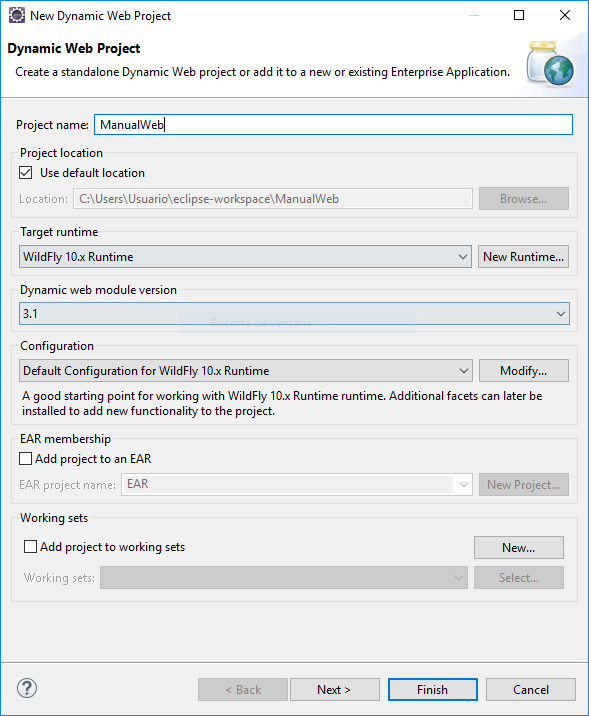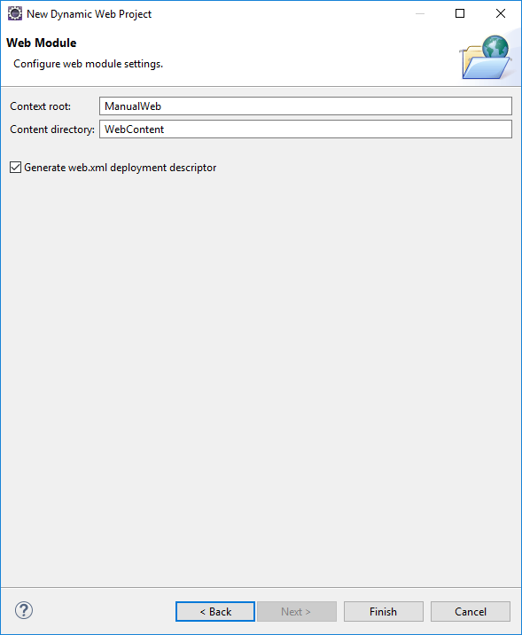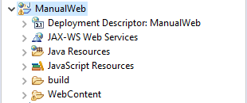Tendremos que crear dos paquetes nuevos, com.matco.manual.bean y com.matco.manual.controller.
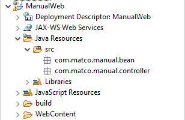Aquí pegaremos los archivos que están en la carpeta Clases, los de la carpeta Bean van en com.matco.manual.bean y los de la carpeta Controller van en com.matco.manual.controller. La clase LoginBean se utiliza para la sesión y la clase GenericBean trae métodos generales para tareas que necesitamos en este manual. Más adelante se explica para qué es cada cosa.
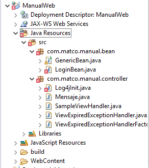Puede que haya errores al pegar las clases, esto se deba a que todavía no hemos puesto las librerías que necesitamos, las librerías que se necesitan se deben de meter en WebContent/WEB-INF/lib.
Ya con las librerías puestas, las clases no darán más problemas.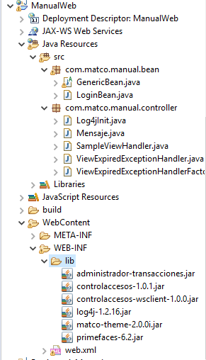Ahora toca configurar el archivo WebContent/WEB-INF/web.xml, para esto, tendremos que utilizar el archivo que está en la carpeta XML/web.xml, copiamos todo el contenido y lo pegamos dentro de nuestro web.xml, esto ajusta parámetros que estén dentro del mismo servidor, el siguiente parámetro se encarga de buscar en la carpeta bin de Wildfly y encontrar el archivo con ese nombre, <param-value> sirve para hacer una petición sobre el nombre que le dimos y que nos regrese el valor de <param-value>.
<context-param>
<param-name>admintx_csa</param-name>
<param-value>admintx_csa.properties</param-value>
</context-param>Ya configurado esto, podremos continuar con la lógica de nuestra aplicación, ya que sabemos lo que nuestro ABC necesita para poder trabajar, empezaremos con la programación de JSF.
Para esto tendremos que crear un Bean que sirva como administrador para nuestro catálogo, este contendrá las operaciones que necesitamos, las cuales serían: listar, agregar, modificar y eliminar. Mediante el Bean nosotros programamos el back-end de nuestra aplicación. Primero tendremos que importar las librerías de entidades y de persistencia, es importante no exportar los .jar con sus librerías ya que estas quedarían mucho más pesadas de lo que deberían.
Aquí está el proceso para poder exportar correctamente la persistencia: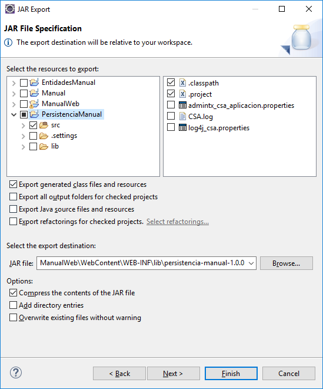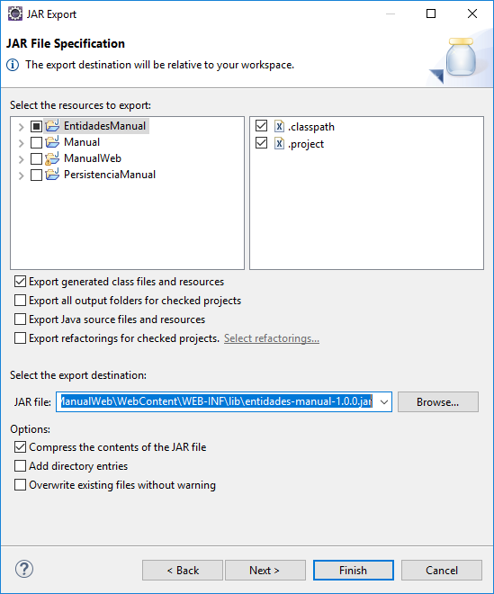Ya hecho esto, pasaremos a la creación de nuestro Bean administrativo para nuestro catálogo.
Primero necesitamos crear este Bean, creamos una nueva clase en com.matco.manual.bean y le pondremos AdministradorAlumnosBean. Abajo estará el código completo.
package com.matco.manual.bean;
public class AdministradorAlumnosBean {
}
Necesitamos extender GenericBean e implementar Serializable, también necesitamos las anotaciones de @ManagedBean y @ViewScoped.
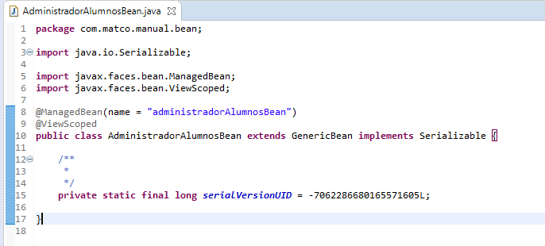@ManagedBean como lo dice su nombre, es un bean administrado por el framework de JSF. Se puede acceder a los bean administrados mediante la página JSF, también se le puede poner nombre con el atributo name, para poder llamarlo como nosotros queramos y poder utilizar sus métodos desde código XHTML.
@ViewScoped, el ViewScoped vive siempre y cuando el usuario siga viendo una página, la vida de este empieza desde que se crea una petición de HTTP y es destruido cuando se cambia a otra vista.
Ahora tendremos que crear las variables globales necesarias para nuestro catálogo, estas son las siguientes: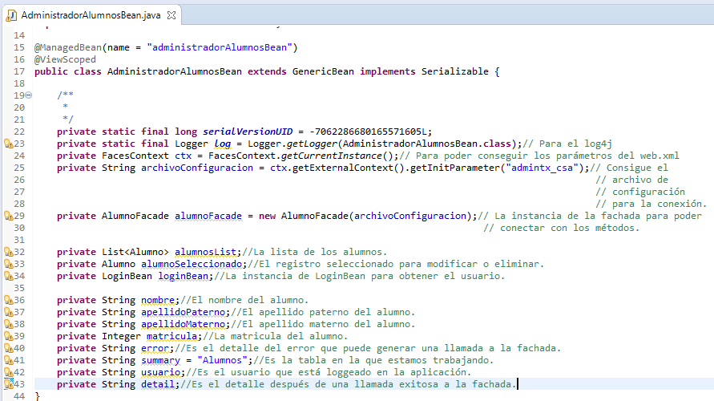Generamos getter y setter. Esto se hace para poder llamar las variables que están en el bean administrado desde la página de JSF, esto se hace con el EL (Expression Languaje).
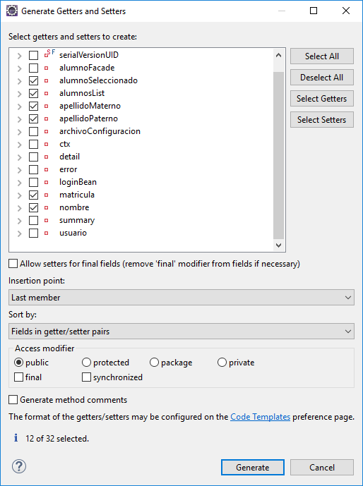Ahora necesitamos crear el método init, aquí inicializamos los parámetros que vamos a necesitar en el ciclo de vida de nuestro bean, por lo general aquí se pone el usuario y las consultas necesarias para llenar listas.
@PostConstruct
public void init() {
loginBean = this.obtenerBean("loginBean");
usuario = loginBean.getUsuario() != null ? loginBean.getUsuario().getUsuario() : "DESARROLLO";
}
@PostConstruct se encarga de que este método se llame una sola vez en todo el ciclo de vida, ya que al ser ViewScoped, la vista queda viva hasta que uno cambia de página, si fuera @RequestScoped, el método sería ejecutado cada vez se hace una petición.
También se necesita la lista de los alumnos que están en la base de datos, para eso necesitamos crear un método que llena la lista y después tenemos que llamarlo desde el init.@PostConstruct
public void init() {
loginBean = this.obtenerBean("loginBean");
usuario = loginBean.getUsuario() != null ? loginBean.getUsuario().getUsuario() : "DESARROLLO";
alumnosList = listarAlumnos(); // se agrego esta linea
}
public List<Alumno> listarAlumnos() {
List<Alumno> alumnos = new ArrayList<Alumno>();
try {
alumnos = alumnoFacade.obtenerTodosAlumnos();
Comparator<Alumno> comp = (Alumno a, Alumno b) -> {
Date fechaA = a.getFechaHoraCreacion() != null ? a.getFechaHoraCreacion() : new Date();
Date fechaB = b.getFechaHoraCreacion() != null ? b.getFechaHoraCreacion() : new Date();
return fechaB.compareTo(fechaA);
};
Collections.sort(alumnos, comp);
} catch (Exception e) {
error = "No se pudieron listar los "+ summary;
LOG.error(error, e);
agregarMensajeError(summary, error);
}
return alumnos;
}Como se ve, inicializamos la lista con el método listarAlumnos, el método manda a llamar al método creado en la persistencia, este consigue toda la lista de alumnos de la tabla y los mete en una List
, utilizamos un Comparator para que los registros más nuevos salgan hasta arriba, necesitamos utilizar operadores ternarios para operaciones simples que involucren expresiones boolean, como en la asignación de usuario y en la asignación de las fechas. Como se ve, el método contiene try y catch, esto debido a que puede haber un error al consultar, dicho error saldrá en nuestro catch que manda un mensaje con un método de GenericBean para poder visualizarlo en la vista Web.
Ya que tenemos nuestra lista, es hora de hacer los métodos que necesitamos para el catálogo.
Empezando con agregar:public void agregarAlumno() {
Alumno nuevo = new Alumno();
nuevo.setNombres(nombres);
nuevo.setApellidoPaterno(apellidoPaterno);
nuevo.setApellidoMaterno(apellidoMaterno);
nuevo.setCreadoPor(usuario);
try {
int matricula = alumnoFacade.guardarAlumno(nuevo);
nuevo.setMatricula(matricula);
details = "Se ha agregado correctamente el alumno "+this.getNombreFormateado(nuevo);
agregarMensajeInfo(summary, details);
} catch (Exception e) {
error = "No se pudo agregar el alumno "+this.getNombreCompleto(nuevo);
LOG.error(summary, e);
agregarMensajeError(summary, error);
}
reload();
}Aquí existe un método reload, este método reinicializa las variables a estados null o las cadenas quedan vacías, esto se hace porque cuando uno termina una acción en la vista, esta no se actualiza sola, se debe de hacer un update desde xhtml y esta mostrará los campos con sus nuevos valores.
El método reload es el siguiente:public void reload() {
if (alumnosList != null) {
alumnosList.clear();
}
alumnosList = listarAlumnos();
nombres = "";
apellidoPaterno = "";
apellidoMaterno = "";
matricula = 0;
alumno = null;
PrimeFaces pf = PrimeFaces.current();
pf.executeScript("PF('tablaAlumnos').clearFilters()");
}
Utilizamos PrimeFaces pf para poder mandar un script que pueda actualizar nuestra tabla, esta borra los filtros y parece que la tabla ha sido cargada de nuevo.
El método modificar y eliminar sería el siguiente:public void modificarAlumno() {
Alumno modificar = alumno;
modificar.setNombres(nombres);
modificar.setApellidoPaterno(apellidoPaterno);
modificar.setApellidoMaterno(apellidoMaterno);
modificar.setModificadoPor(usuario);
try {
alumnoFacade.modificarAlumno(modificar);
details = "Se ha modificado correctamente el alumno "+this.getNombreFormateado(modificar);
agregarMensajeInfo(summary, details);
} catch (Exception e) {
error = "No se pudo modificar el alumno "+this.getNombreCompleto(modificar);
LOG.error(error, e);
agregarMensajeError(summary, error);
}
reload();
}
public void eliminarAlumno() {
Alumno tmp = alumno;
try {
alumnoFacade.eliminarAlumno(tmp);
details = "Se ha eliminado al ex-alumno: "+this.getNombreFormateado(tmp);
agregarMensajeInfo(summary, details);
} catch(Exception e) {
error = "No se pudo eliminar al alumno "+this.getNombreCompleto(tmp);
LOG.error(error, e);
agregarMensajeError(summary, error);
}
reload();
}Las ultimas funciones para presentar el nombre
private static final DecimalFormat formatoMatricula = new DecimalFormat("000000");
public String getNombreCompleto(Alumno al) {
return al.getNombres()+" "+al.getApellidoPaterno()+" "+al.getApellidoMaterno();
}
public String getNombreFormateado(Alumno alumno) {
return formatoMatricula.format(alumno.getMatricula())+" - "+getNombreCompleto(alumno);
}
public void onRowSelect() { // una ultima funcion que se necesita para mas adelante
nombres = alumno.getNombres();
apellidoPaterno = alumno.getApellidoPaterno();
apellidoMaterno = alumno.getApellidoMaterno();
matricula = alumno.getMatricula();
}
Codigo completo: AdministradorAlumnosBean.java
package com.matco.manual.bean;
import java.io.Serializable;
import java.text.DecimalFormat;
import javax.annotation.PostConstruct;
import javax.faces.bean.ManagedBean;
import javax.faces.bean.ViewScoped;
import javax.faces.context.FacesContext;
import org.apache.log4j.Logger;
import org.primefaces.PrimeFaces;
import com.matco.manual.entity.Alumno;
import com.matco.manual.facade.AlumnoFacade;
import java.util.ArrayList;
import java.util.Collections;
import java.util.Comparator;
import java.util.Date;
import java.util.List;
@ManagedBean(name = "administradorAlumnosBean")
@ViewScoped
public class AdministradorAlumnosBean extends GenericBean implements Serializable{
/**
*
*/
private static final long serialVersionUID = -7062286680165571605L;
private static final DecimalFormat formatoMatricula = new DecimalFormat("000000");
private static final Logger LOG = Logger.getLogger(AdministradorAlumnosBean.class); // Para el log4j
private FacesContext ctx = FacesContext.getCurrentInstance(); // Para poder conseguir los parametros del web.xml
private String configFile = ctx.getExternalContext().getInitParameter("admintx_csa");
private AlumnoFacade alumnoFacade = new AlumnoFacade(configFile); // instancia de la fachada para conectar con los metodos
private List<Alumno> alumnosList; // lista de alumnos
private Alumno alumno; //el alumno que sera editado
private LoginBean loginBean; // instancia del loginBean para obtener el usuario
private String nombres; // nombres del alumno
private String apellidoPaterno;
private String apellidoMaterno;
private int matricula;
private String error; // Detalle del error que puede generar una fachada
private String summary = "Alumnos"; // Es la tabla en la que estamos trabajando
private String usuario; // Es el usuario que esta loggeado en la app
private String details; // Es el detalle despues de una llamada exitosa a la fachada
public List<Alumno> getAlumnosList() {
return alumnosList;
}
public void setAlumnosList(List<Alumno> alumnosList) {
this.alumnosList = alumnosList;
}
public Alumno getAlumno() {
return alumno;
}
public void setAlumno(Alumno alumno) {
this.alumno = alumno;
}
public String getNombres() {
return nombres;
}
public void setNombres(String nombres) {
this.nombres = nombres;
}
public String getApellidoPaterno() {
return apellidoPaterno;
}
public void setApellidoPaterno(String apellidoPaterno) {
this.apellidoPaterno = apellidoPaterno;
}
public String getApellidoMaterno() {
return apellidoMaterno;
}
public void setApellidoMaterno(String apellidoMaterno) {
this.apellidoMaterno = apellidoMaterno;
}
public int getMatricula() {
return matricula;
}
public void setMatricula(int matricula) {
this.matricula = matricula;
}
@PostConstruct
public void init() {
loginBean = this.obtenerBean("loginBean");
usuario = loginBean.getUsuario() != null ? loginBean.getUsuario().getUsuario() : "DESARROLLO";
alumnosList = listarAlumnos();
}
public List<Alumno> listarAlumnos() {
List<Alumno> alumnos = new ArrayList<Alumno>();
try {
alumnos = alumnoFacade.obtenerTodosAlumnos();
Comparator<Alumno> comp = (Alumno a, Alumno b) -> {
Date fechaA = a.getFechaHoraCreacion() != null ? a.getFechaHoraCreacion() : new Date();
Date fechaB = b.getFechaHoraCreacion() != null ? b.getFechaHoraCreacion() : new Date();
return fechaB.compareTo(fechaA);
};
Collections.sort(alumnos, comp);
} catch(Exception e) {
error = "No se pudieron listar los "+ summary;
LOG.error(error, e);
agregarMensajeError(summary, error);
}
return alumnos;
}
public void agregarAlumno() {
Alumno nuevo = new Alumno();
nuevo.setNombres(nombres);
nuevo.setApellidoPaterno(apellidoPaterno);
nuevo.setApellidoMaterno(apellidoMaterno);
nuevo.setCreadoPor(usuario);
try {
int matricula = alumnoFacade.guardarAlumno(nuevo);
nuevo.setMatricula(matricula);
details = "Se ha agregado correctamente el alumno "+this.getNombreFormateado(nuevo);
agregarMensajeInfo(summary, details);
} catch (Exception e) {
error = "No se pudo agregar el alumno "+this.getNombreCompleto(nuevo);
LOG.error(summary, e);
agregarMensajeError(summary, error);
}
reload();
}
public void reload() {
if (alumnosList != null) {
alumnosList.clear();
}
alumnosList = listarAlumnos();
nombres = "";
apellidoPaterno = "";
apellidoMaterno = "";
matricula = 0;
alumno = null;
PrimeFaces pf = PrimeFaces.current();
pf.executeScript("PF('tablaAlumnos').clearFilters()");
}
public void modificarAlumno() {
Alumno modificar = alumno;
modificar.setNombres(nombres);
modificar.setApellidoPaterno(apellidoPaterno);
modificar.setApellidoMaterno(apellidoMaterno);
modificar.setModificadoPor(usuario);
try {
alumnoFacade.modificarAlumno(modificar);
details = "Se ha modificado correctamente el alumno "+this.getNombreFormateado(modificar);
agregarMensajeInfo(summary, details);
} catch (Exception e) {
error = "No se pudo modificar el alumno "+this.getNombreCompleto(modificar);
LOG.error(error, e);
agregarMensajeError(summary, error);
}
reload();
}
public void eliminarAlumno() {
Alumno tmp = alumno;
try {
alumnoFacade.eliminarAlumno(tmp);
details = "Se ha eliminado al ex-alumno: "+this.getNombreFormateado(tmp);
agregarMensajeInfo(summary, details);
} catch(Exception e) {
error = "No se pudo eliminar al alumno "+this.getNombreCompleto(tmp);
LOG.error(error, e);
agregarMensajeError(summary, error);
}
reload();
}
public String getNombreCompleto(Alumno al) {
return al.getNombres()+" "+al.getApellidoPaterno()+" "+al.getApellidoMaterno();
}
public String getNombreFormateado(Alumno alumno) {
return formatoMatricula.format(alumno.getMatricula())+" - "+getNombreCompleto(alumno);
}
public void onRowSelect() {
nombres = alumno.getNombres();
apellidoPaterno = alumno.getApellidoPaterno();
apellidoMaterno = alumno.getApellidoMaterno();
matricula = alumno.getMatricula();
}
}Después de tener listos nuestros métodos principales del catálogo, toca empezar con xhtml.
Primero debemos establecer las páginas que vamos a utilizar, para esto necesitamos una página principal para el catálogo y tres diálogos.
Crearas una carpeta llamada alumnos, dentro de la carpeta WebContent y crearas las paginas xhtml.
catalogoAlumnos.xhtml
dialogoAgregarAlumno.xhtml
dialogoEditarAlumno.xhtml
dialogoEliminarAlumno.xhtml
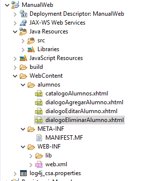Por el momento las páginas estarán vacías, nos preocuparemos de llenarlas ya que terminemos con los templates y el login. El login es genérico, este se encuentra en la carpeta Páginas del manual.
Solo tenemos que crear una carpeta login y dentro ponemos el login.xhtml.
Ahora tenemos que pegar la carpeta resources, la cual tiene archivos css, imágenes, js etc…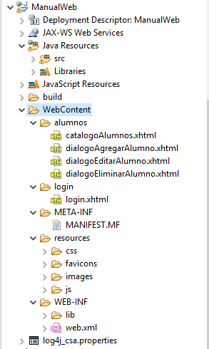Ahora pegaremos la carpeta templates dentro de WEB-INF.
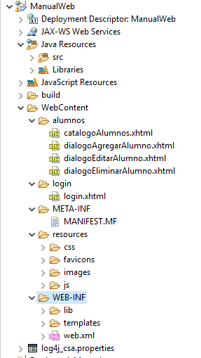Empezando con footer.xhtml. En xhtml para poder utilizar los namespace se necesita hacer una composition como en la imagen de abajo.
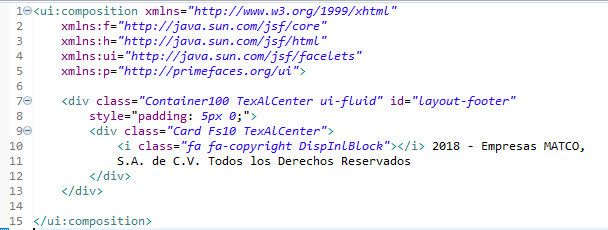Las composition nos dan las herramientas para poder utilizar los diversos componentes que tiene jsf, estos dependen mucho de la página de donde se saca y podemos saber qué hace cada uno, cada componente tiene sus propios atributos y hay que conocerlos para poder trabajar con ellos. En la composición, se debe de respetar los nombres que están preestablecidos.
Este es el topmenu.xhtml Esta parte contiene el nombre de usuario, rol y la opción para cerrar sesión.
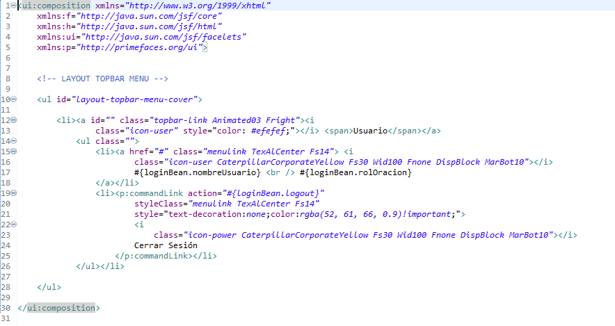Este es el topbar.xhtml. Aquí se pone el nombre de la aplicación, en nuestro caso es “Manual”.
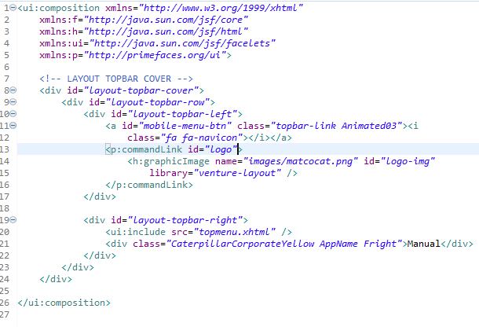Este es el layoutmenu.xhtml
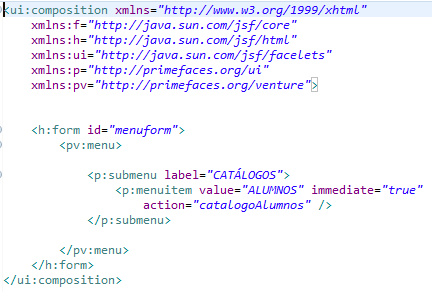Ahora mismo nuestro layoutmenu es muy corto, ya que nosotros estamos utilizando un catálogo nada más. Explicando las etiquetas de la opción en el menú dejaría un poco más claro lo que hace.
Value=”ALUMNOS” el valor que se le da a la opción, es su label.
Immediate=”true” si se requiere que la acción se haga aunque la petición sea un fracaso.
Action=”catalogoAlumnos” este parámetro se configura en el faces-config.xml.Para importar faces-config.xml, nos vamos a la carpeta del manual → XML. Ahí encontraras dos xml y los copias en la carpeta WEB-INF.
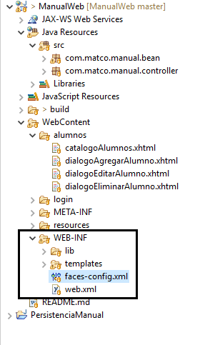Abres faces-config.xml y das clic abajo donde dice source y lo configuras.
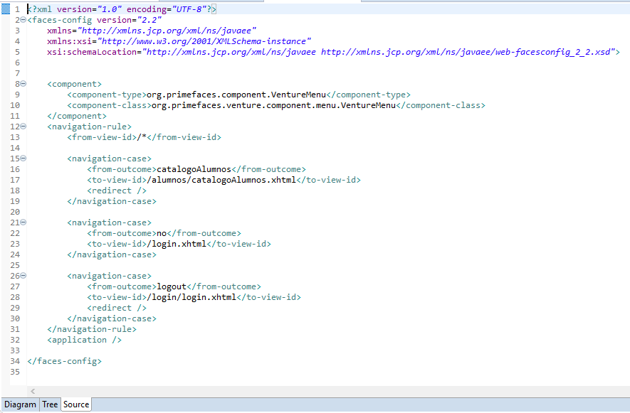Ya tenemos todo listo para poder empezar con el código de xhtml y poder visualizar nuestro catálogo con sus operaciones básicas.
Primero hay que situarnos sobre los diálogos, ya que son más rápidos, fáciles de comprender y por lo general son muy chicos.Diálogo agregar:
<HTML xmlns = "http://www.w3.org/1999/xhtml"
xmlns:ui = "http://java.sun.com/jsf/facelets"
xmlns:h = "http://java.sun.com/jsf/html"
xmlns:f = "http://java.sun.com/jsf/core"
xmlns:p = "http://primefaces.org/ui">
<p:dialog header="ALTA ALUMNO" widgetVar="altaAlumno" id="altaAlumno"
appendTo="@(body)" dynamic="false" resizable="false" modal="true"
showEffect="fade" hideEffect="fade" height="200px" width="450px"
closable="false">
<h:form id="formDialogAgregar">
<p:panel style="border:none">
<p:panelGrid columns="2">
<p:outputLabel value="Nombre:" for="nombre"/>
<p:inputText id="nombre" value="#{administradorAlumnosBean.nombres}" />
<p:outputLabel value = "Apellido Paterno: " for="apellidoPaterno"/>
<p:inputText id="apellidoPaterno" value="#{administradorAlumnosBean.apellidoPaterno}" />
<p:outputLabel value = "Apellido Materno: " for="apellidoMaterno"/>
<p:inputText id="apellidoMaterno" value="#{administradorAlumnosBean.apellidoMaterno}" />
</p:panelGrid>
<div style="margin-top:10px; display: block; text-align: center">
<p:commandButton value = "Registrar"
oncomplete="PF('altaAlumno').hide();"
process="@parent"
actionListener="#{administradorAlumnosBean.agregarAlumno}"
update="nombre, apellidoPaterno, apellidoMaterno, :formAlumnos:tablaAlumnos, :formAlumnos:menuBar,
:formAlumnos:growl"/>
<p:commandButton value="Cancelar" onclick="PF('altaAlumno').hide();"
actionListener="#{administradorAlumnosBean.reload}"
update="nombre, apellidoPaterno, apellidoMaterno,
:formAlumnos:tablaAlumnos, :formAlumnos:menuBar"/>
</div>
</p:panel>
</h:form>
</p:dialog>
</HTML>Como antes, utilizamos la llamada composición, como el dialogo está en una página aparte, para poder poner el código y que este corresponda bien con las tag que estamos haciendo, necesitamos ponerlo.
<p:dialog> Este es un diálogo, los atributos que manejamos son los siguientes
header="ALTA ALUMNO" - Es el nombre que sale en el titulo del diálogo.
widgetVar="altaAlumno" - Es el identificador para las llamadas de JavaScript.
id="altaAlumno" - Es el id que le damos.
appendTo="@(body)" - Es para que se pegue al body desde el que se invoca.
resizable="false" - Es para poder cambiar el tamaño del diálogo.
showEffect="fade" – Es el efecto al mostrar.
hideEffect="fade" – Es el efecto al ocultar.
height="200px" - Es la altura del diálogo.
width="450px" - Es la anchura del diálogo.
closable="false" – Esto determina si se puede cerrar con un botón X.
<h:form> Form de html común, se le pone un id para poder identificarlo.
<p:panel> Es un panel que tiene un estilo ya predefinido, por lo general tiene un padding.
<p:panelGrid> Es un panel pero acomodado, aquí se manejan distintos atributos para poder partirlo en partes iguales o desiguales.
<p:outputLabel> Es una etiqueta, tiene el value normal y el for lo utiliza para poder dirigirse a un componente dentro del formulario.
<p:inputText> Es una caja de texto, a esta se le puede poner reglas de input, ya sea una expresión regular para poder restringir el tipo de caracteres que entran.Primero hay que darnos cuenta de algo muy importante, ya que no sirve de nada hacer una página hueca si no va a tener interacción con el lado del servidor, para esto existe el expression lenguaje (EL), aquí se ve un ejemplo:
<p:inputText id="nombre" value="#{administradorAlumnosBean.nombre}" />
¿Recuerdan la private String nombre;? ¿Recuerdan que le pusimos getter y setter? Para esto es, ya que el @ManagedBean permite que desde la página podamos mandar a llamar mediante el EL a estas variables, por eso se tiene que encapsular y poner getter y setter, ya que podremos escribir en ellas y leerlas. Hay que tener en cuenta qué es lo que vamos a meter, por ejemplo, no podemos poner un inputText con una variable que vayamos a utilizar como número, ya sea un Integer, si es para visualizar nada más no hay ningún problema, pero si hacemos algo así
inputText value=”#{bean.numero} y en nuestro bean utilizamos ese número, el número saldrá inválido ya que no se puede meter un string dentro de cualquier variable numérica, primero tendremos que castearla, para evitar esos problemas y el verbose desde java se utiliza el inputNumber, este tiene sus atributos mágicos para poder poner restricciones a los números, minimos y máximos, cuantos decimales quieres, los símbolos que necesites, etc…Ahora hablaremos sobre <p:commandButton>
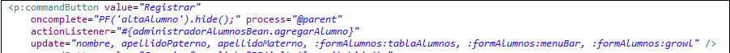oncomplete sirve para poder ejecutar una llamada de JS después de que el actionListener termine.
Process ubica los componentes a los que se les va a aplicar el request, en un ejemplo fácil, hay una puerta y hay una persona viendo quién pasa, el process decide quién pasa y quién no pasa, si ponemos
Process=”@parent” se encargará de procesar los componentes que se encuentren dentro de el formulario padre, y como el dialogo está dentro de un formulario, este sería el afectado. No se confundan, no hará efecto sobre el formulario en donde está el catálogo, ya que el formulario ese y los formularios de los diálogos están al mismo nivel, haría efecto sobre el formulario que se encuentra en el “Card” del div, ya que este se carga desde un inicio gracias a los ui:define.
actionListener es el que revisa cuál método es el que se va a mandar a llamar una vez que se presione el botón, una vez que se termine de ejecutar el método se podrá ejecutar el oncomplete.
Update se encarga de actualizar los componentes que lleven por id los que se han metido dentro del mismo atributo, se puede mandar a actualizar componentes fuera del mismo formulario, para esto se necesita poner un : y la referencia del componente completa para poder ubicarlo, ejemplo:
:formAlumnos:tablaAlumnosNosotros podemos poner todos los id que queramos, pero estos deben ser existentes y estar en donde estamos especificando que existen. Si no se hace esto nos saltará una pantalla de error toda fea en nuestra página.
El segundo botón es el de cancelar, este manda a llamar al método reload para poder limpiar las variables y hace un update a los componentes que podrían haber sido afectados al momento de abrir esa pantalla.Diálogo editar Alumno:
<HTML xmlns = "http://www.w3.org/1999/xhtml"
xmlns:ui = "http://java.sun.com/jsf/facelets"
xmlns:h = "http://java.sun.com/jsf/html"
xmlns:f = "http://java.sun.com/jsf/core"
xmlns:p = "http://primefaces.org/ui">
<p:dialog header="EDITAR ALUMNO" widgetVar="editarAlumno" id="editarAlumno"
appendTo="@(body)" dynamic="false" resizable="false" modal="true"
showEffect="fade" hideEffect="fade" height="200px" width="450px"
closable="false">
<h:form id="formDialogoModificar">
<p:panel style="border:none">
<p:panelGrid columns="2">
<p:outputLabel value="Matricula: " for="matricula"/>
<p:inputText id="matricula" value="#{administradorAlumnosBean.matricula}" />
<p:outputLabel value="Nombre:" for="nombre"/>
<p:inputText id="nombre" value="#{administradorAlumnosBean.nombres}" />
<p:outputLabel value = "Apellido Paterno: " for="apellidoPaterno"/>
<p:inputText id="apellidoPaterno" value="#{administradorAlumnosBean.apellidoPaterno}" />
<p:outputLabel value = "Apellido Materno: " for="apellidoMaterno"/>
<p:inputText id="apellidoMaterno" value="#{administradorAlumnosBean.apellidoMaterno}" />
</p:panelGrid>
<div style="margin-top:10px; display: block; text-align: center">
<p:commandButton value = "Editar"
oncomplete="PF('editarAlumno').hide();"
process="@parent"
actionListener="#{administradorAlumnosBean.modificarAlumno}"
update="nombre, apellidoPaterno, apellidoMaterno,
:formAlumnos:tablaAlumnos, :formAlumnos:menuBar,
:formAlumnos:growl"/>
<p:commandButton value="Cancelar" onclick="PF('altaAlumno').hide();"
actionListener="#{administradorAlumnosBean.reload}"
update="nombre, apellidoPaterno, apellidoMaterno,
:formAlumnos:tablaAlumnos, :formAlumnos:menuBar"/>
</div>
</p:panel>
</h:form>
</p:dialog>
</HTMLEste se parece mucho al gregar, lo único que cambia son algunos componentes dentro del update, el header, la widgetVar, y se le mete el campo de matrícula, ojo, este es un inputText debido a que solo es para efecto de consulta.
Aquí nos damos cuenta de que existe un atributo disabled, este atributo se encarga de deshabilitar el componente para que no se le pueda dar click, dar focus con tab ni poder editarlo.Diálogo eliminar:
<HTML xmlns = "http://www.w3.org/1999/xhtml"
xmlns:ui = "http://java.sun.com/jsf/facelets"
xmlns:h = "http://java.sun.com/jsf/html"
xmlns:f = "http://java.sun.com/jsf/core"
xmlns:p = "http://primefaces.org/ui">
<p:confirmDialog id="eliminarAlumno" header="Confirmacion" widgetVar="eliminarAlumno"
width="410" height="40" closable="false" position="center center"
onShow="PF('confirmacion').initPosition()" responsive="true">
<p:commandButton value="Si" process="@parent"
update=":formAlumnos:tablaAlumnos :formAlumnos:growl :formAlumnos:menuBar"
oncomplete="PF('eliminarAlumno').hide();"
actionListener="#{administradorAlumnosBean.eliminarAlumno}" />
<p:commandButton value="No" oncomplete="PF('eliminarAlumno').hide()"/>
<f:facet name="message">
<div>
<h:outputFormat value="Estas seguro que desea eliminar al alumno?" escape="false"/>
</div>
</f:facet>
</p:confirmDialog>
</HTML>Aquí es diferente, ya que aquí se maneja un diálogo de confirmación, se utilizan dos botones que ya se han visto con anterioridad, solamente que se pone un mensaje con un icono especial como advertencia para ver si el usuario de verdad quiere realizar esa acción.
Catálogo alumnos:
Este código es importante, aquí se crea la tabla para mostrar y se importan los dialogos.<ui:composition xmlns = "http://www.w3.org/1999/xhtml"
xmlns:ui = "http://java.sun.com/jsf/facelets"
xmlns:h = "http://java.sun.com/jsf/html"
xmlns:f = "http://java.sun.com/jsf/core"
xmlns:p = "http://primefaces.org/ui"
template = "/WEB-INF/templates/layoutnormal.xhtml">
<ui:define name="cuerpo">
<div class="Card">
<h:form id="formAlumnos">
<p:breadCrumb>
<p:menuitem value="Home"/>
<p:menuitem value="Catalogos"/>
<p:menuitem value="Alumnos"/>
</p:breadCrumb>
<br />
<p:growl id="growl" showSummary="true" showDetail="true" life="2000" sticky="false"/>
<p:menubar id="menuBar">
<p:submenu label="Opciones">
<p:menuitem value="Registrar" icon="fa fa-plus" onclick="PF('altaAlumno').show();"/>
<p:menuitem value="Editar" icon="fa fa-plus" onclick="PF('editarAlumno').show();"
disabled="#{administradorAlumnosBean.alumno == null}"/>
<p:menuitem value="Eliminar" icon="fa fa-plus" onclick="PF('eliminarAlumno').show();"
disabled="#{administradorAlumnosBean.alumno == null}"/>
</p:submenu>
<p:menuitem value="Limpiar filtros" icon="fa fa-eraser" onclick="PF('tablaAlumnos').clearFilters()"/>
</p:menubar>
<p:panelGrid columns="1" layout="grid" styleClass="ui-panelgrid-blank">
<p:dataTable id="tablaAlumnos" widgetVar="tablaAlumnos"
var="alumno" value="#{administradorAlumnosBean.alumnosList}"
selection="#{administradorAlumnosBean.alumno}"
selectionMode="single"
filteredValue="#{seleccionBean.alumnosListFiltrada}"
rowKey="#{alumno.matricula}" filterDelay="1000"
paginatorTemplate="{CurrentPageReport} {FirstPageLink} {PreviousPageLink} {PageLinks} {NextPageLink} {LastPageLink} {RowsPerPageDropdown}"
paginatorPosition="bottom" rows="10"
sortMode="multiple" paginator="true"
currentPageReportTemplate="Página: {currentPage} de {totalPages}"
emptyMessage="No se encontraron Alumnos" style="margin-bottom:20px;"
rowsPerPageTemplate="5,10,15">
<p:ajax event="rowSelect"
listener="#{administradorAlumnosBean.onRowSelect}"
update="formAlumnos:tablaAlumnos, formAlumnos:menuBar, :formDialogoModificar:matricula, :formDialogoModificar:nombre, :formDialogoModificar:apellidoPaterno, :formDialogoModificar:apellidoMaterno" />
<p:column headerText="Matrícula<br/>" sortBy="#{alumno.matricula}" filterBy="#{alumno.matricula}"
filterMatchMode="contains" filterStyle="width:50%;">
<h:outputText value="#{alumno.matricula}" />
</p:column>
<p:column headerText="Nombre" sortBy="#{alumno.nombres}" filterBy="#{alumno.nombres}" filterMatchMode="contains"
filterStyle="width:50%;">
<h:outputText value="#{alumno.nombres}" />
</p:column>
<p:column headerText="Apellido Paterno<br/>" sortBy="#{alumno.apellidoPaterno}"
filterBy="#{alumno.apellidoPaterno}" filterMatchMode="contains" filterStyle="width:50%;">
<h:outputText value="#{alumno.apellidoPaterno}" />
</p:column>
<p:column headerText="Apellido Materno" sortBy="#{alumno.apellidoMaterno}"
filterBy="#{alumno.apellidoMaterno}" filterMatchMode="contains" filterStyle="width:50%;">
<h:outputText value="#{alumno.apellidoMaterno}" />
</p:column>
</p:dataTable>
</p:panelGrid>
</h:form>
<ui:include src="dialogoEditarAlumno.xhtml" />
<ui:include src="dialogoAgregarAlumno.xhtml" />
<ui:include src="dialogoEliminarAlumno.xhtml" />
</div>
</ui:define>
</ui:composition>Ahora el SeleccionBean, este bean sirve como sesión, se parece al loginBean pero este se utiliza para poder guardar objetos de una vista a otra si se requiere, también lo utilizamos para guardar valores importantes dentro de la misma vista en la que interactúan distintos bean. Aquí se mira que utiliza una lista aparte para poder guardar la lista nueva ya filtrada, esto es para que al filtrar, no se pierda la lista original y al cambiar de pagina o seleccionar un registro, no se pierdan los filtros.
Creamos una nueva clase SeleccionBean en com.matco.manual.bean
package com.matco.manual.bean;
import java.util.List;
import com.matco.manual.entity.Alumno;
import javax.faces.bean.ManagedBean;
import javax.faces.bean.SessionScoped;
@ManagedBean(name = "seleccionBean")
@SessionScoped
public class SeleccionBean {
private List<Alumno> alumnosListFiltrada;
public List<Alumno> getAlumnosListFiltrada() {
return alumnosListFiltrada;
}
public void setAlumnosListFiltrada(List<Alumno> alumnosListFiltrada) {
this.alumnosListFiltrada = alumnosListFiltrada;
}
}
Ahora solo queda implementar el proyecto web dentro de nuestro servidor Wildfly.
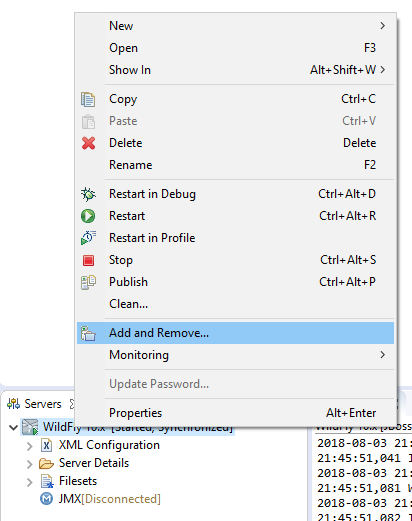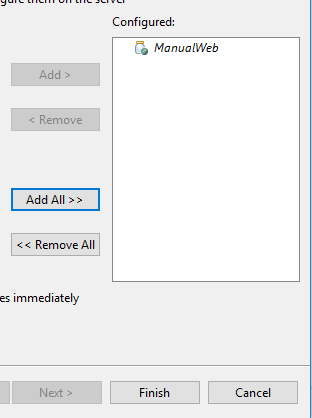Iniciamos el servidor de nuevo y vamos a la dirección:
http://localhost:8085/ManualWeb/alumnos/catalogoAlumnos.xhtml -
Pantallas
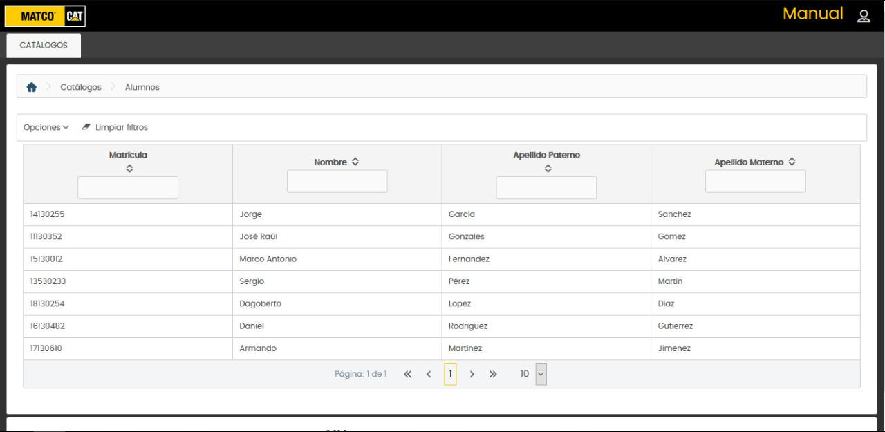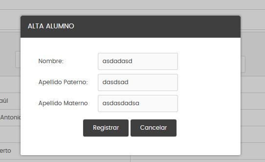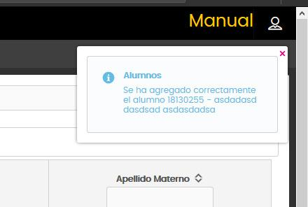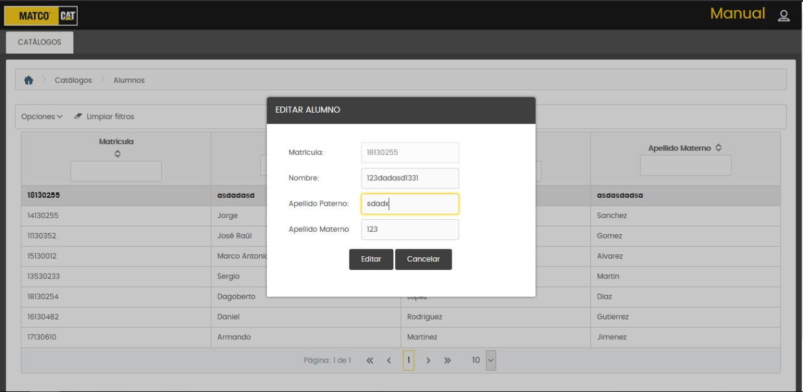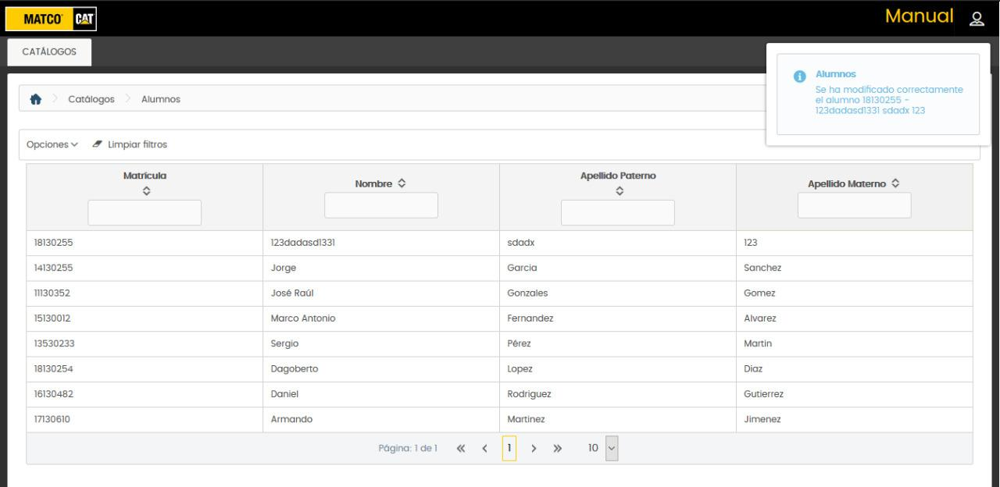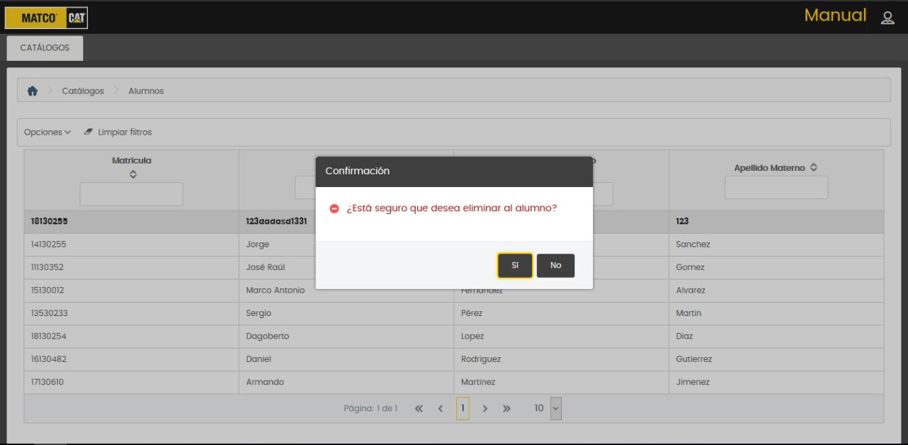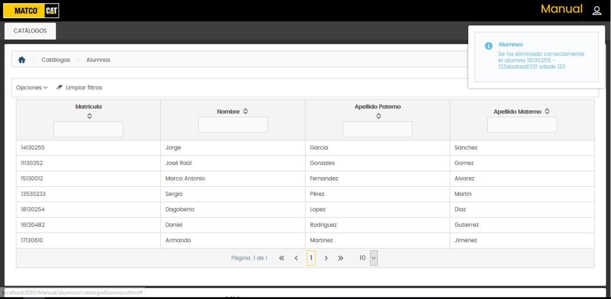